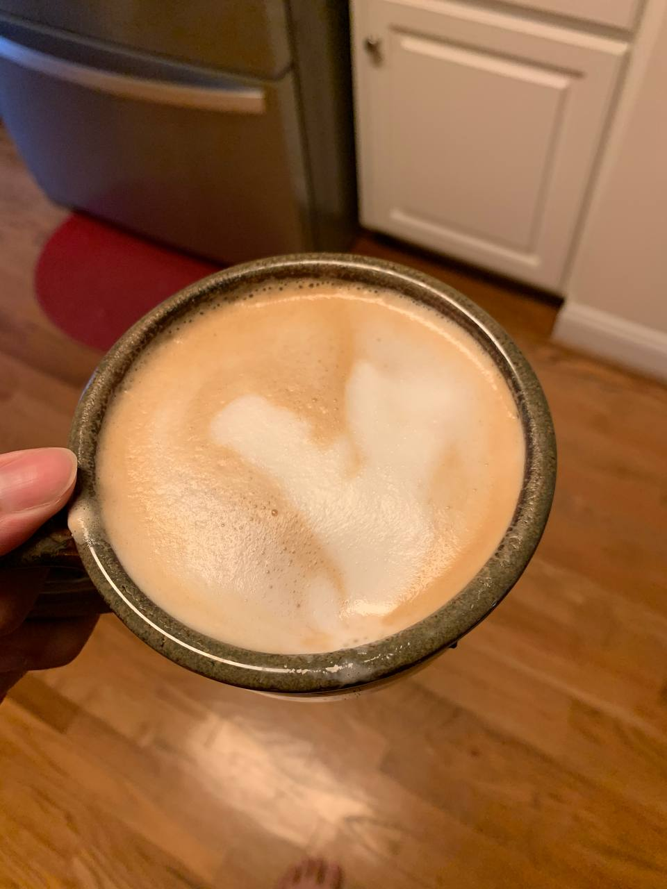

<h1 style="text-align: center;"></h1>
  
<!-- Image -->
<div style="text-align: center; size: 10em;">
    
  </div>

<!-- Description-->
<div style ="text-align: center; text-size; small;">
  <p>Homemade latte reference, I am no barista though so no fancy art.</p>
</div>


<div style="display; flex: auto;">
 <!-- Requirements -->
<div style="text-size: small;">
  <h4>Requirements:</h4>
  <ul>
    <li>Espresso machine(or way to heat espresso shot)</li>
    <li>Milk frother</li>
  </ul>
</div>
<!-- Ingredients -->
  <div style="text-size: small;">
    <h4>Ingredients:</h4>
    <ul>
      <li>Fresh Espresso Grounds</li>
      <li>Milk</li>
    </ul>
  </div>

<!-- Steps -->
  <div style="text-size: small;">
    <h4>Steps:</h4>
    <ol>
      <li>Take a moment to thoroughly enjoy the smell of coffee grounds</li>
      <li>Use machine or tools to prepare espresso shot(s)</li>
      <li>Frother the milk until hot to touch</li>
      <li>Begin pouring by dripping frothed milk in deep end of espresso</li>
      <li>As liquid levels, pour in the center</li>
      <li>Enjoy by itself, with snacks, or with creme brulee if feeling risque</li>
    </ol>
  </div>
  </div>
